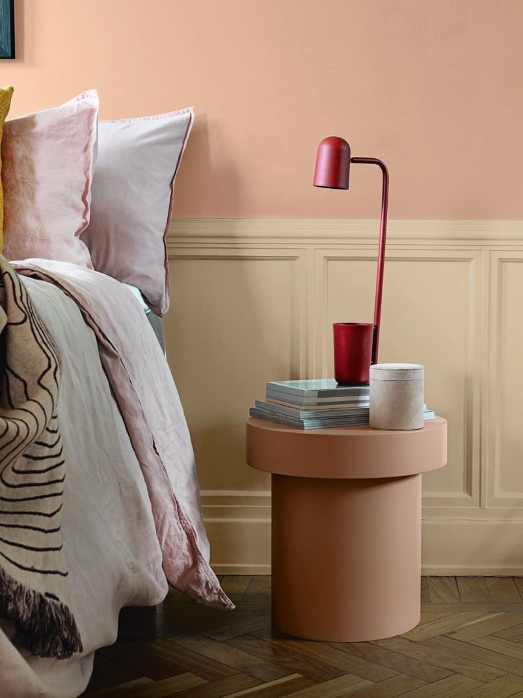
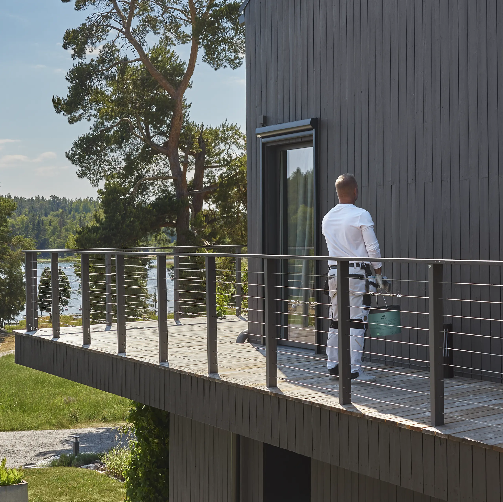
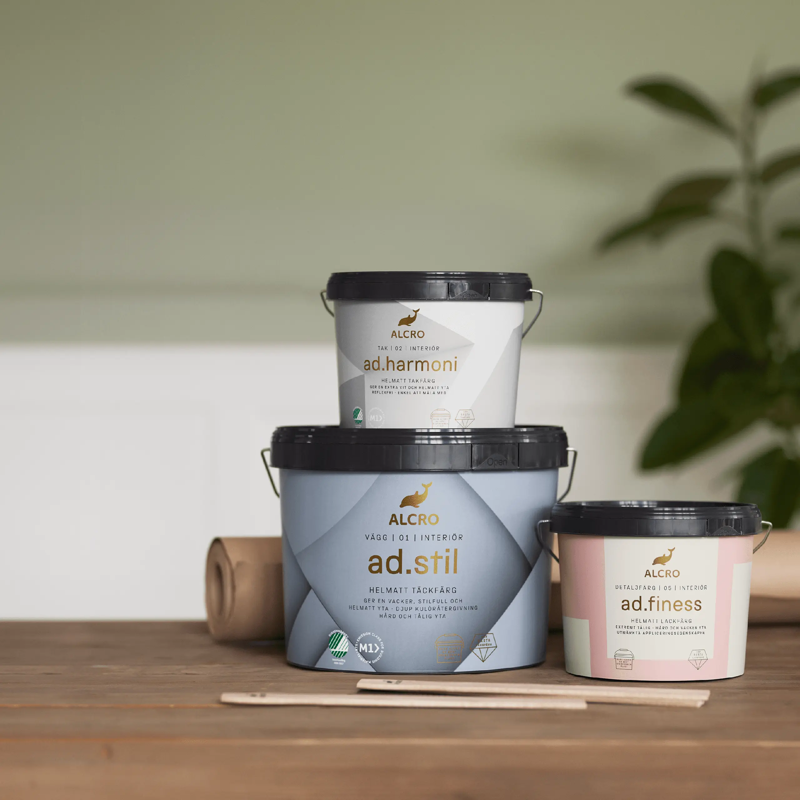

Högkvalitativ färg för inomhus och utomhus från Sveriges ledande märken — plus professionell färgblandning direkt i butiken.
Färg är en av de viktigaste elementen i varje hem — det skapar stämning, karaktär och uttryck för dina rum. Därför erbjuder vi ett noggrant urval av högkvalitativ färg från Skandinaviens mest pålitliga märken: Alcro, Nordsjö och Engwall o. Claesson.
Oavsett om du söker en klassisk inomhusfärg för vardagsrummet, en robust utomhusfärg för fasaden eller en skyddande trä-olja för din veranda — vi har rätt produkt för jobbet. Och om du inte hittar rätt färg på vår hylla? Inga problem. Vi blandar din färg direkt i butiken från tusentals kulörer. Säg vad du vill ha — en klassisk grön-grå ton, ett varmt beige eller en djup marinblå — vår personal blandar exakt den nyans du önskar.
Med 40 år av erfarenhet hjälper vi dig välja rätt färg för rätt ändamål. Vi ger expertråd om förberedelse, applikation och underhåll — så ditt färgningsresultat blir perfekt.
Från vardagsrummet till sovrummet — vi erbjuder premiumfärg speciellt framtagen för inomhusklimat. Alcro och Nordsjö är kända för sin mjuka avrullning, höga täckningsgrad och utmärkta färgkvalitet.
Vi har både klassiska vita och grå nyanser, plus hela paletterna med varma och kalla toner. Allergiker-anpassade varianter utan stark lukt finns också tillgängliga. Vår personal hjälper dig välja rätt finish — matt för lugn karaktär, halvglans för större rum, eller glans för extra skydd.

Utomhusfärg måste tåla väder och vind — regn, snö, sol och salt från skärgårdsklimatet. Därför använder vi endast färg från märken med beprövat motstånd mot UV-strålning och fukt.
Nordsjö och Alcro:s utomhusfärger är speciellt framtagna för nordiska klimat. Vi erbjuder också premium trä-olja för dina träutekonstruktioner — verandor, altaner och pergolor. Trä-oljan ger ett naturligt utseende samtidigt som den skyddar mot väder och vind. Vi ger råd om förberedelse, färgval och underhåll för långsiktigt skydd.

Du har sett en färg du älskar — men den finns inte i vårt sortiment? Eller du vill ha en helt egen nyans? Vi blandar din färg på plats, direkt i butiken.
Med våra moderna färgblandningsmaskiner kan vi skapa nästan vilken kulör som helst från Alcros och Nordsjös baser. Det tar bara några minuter, och du går hem med din helt unika färg, färdig att måla.
Vi erbjuder även färgprovning — ta hem små provburkar så du kan se hur kulören fungerar i ditt eget ljus innan du köper hela omgången.

Kom förbi vår butik i Gustavsberg för att se vårt färgsortiment, få expertrådgivning och möjligheten till direktblandning. Vi hjälper dig välja rätt färg för rätt ändamål.
Vägbeskrivning & öppettider